Techniques
Large Colorful Designs
Posted by Daniel Bohnett on December 9, 2019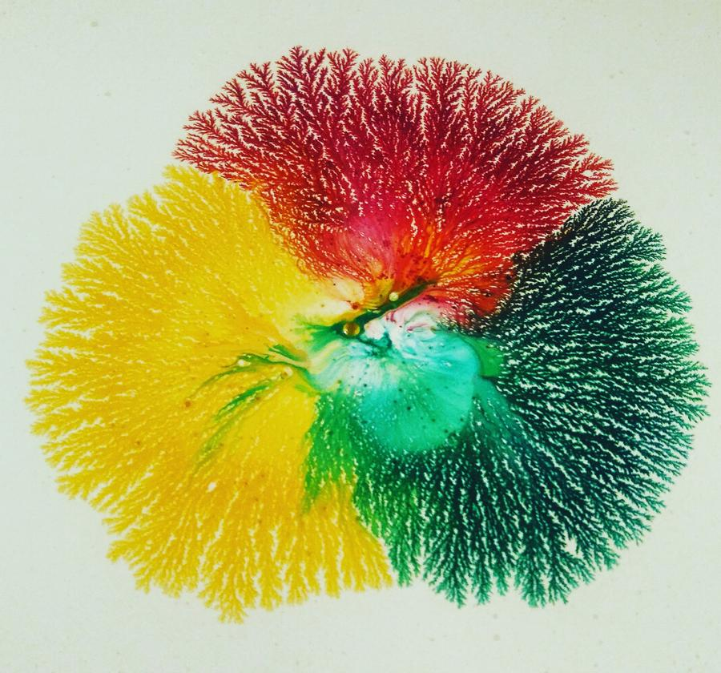
This technique creates a large, colorful design. You will need: Paiwt Medium, 3 different Paiwt Colors, and.....
Read more →
Using Paiwt On Clay
Posted by Daniel Bohnett on July 27, 2019
Thank you to Ludmila Bakulina for sharing her technique that uses Paiwt on clay. Watch her tutorials on.....
Read more →
Creating Starfish
Posted by Daniel Bohnett on August 21, 2018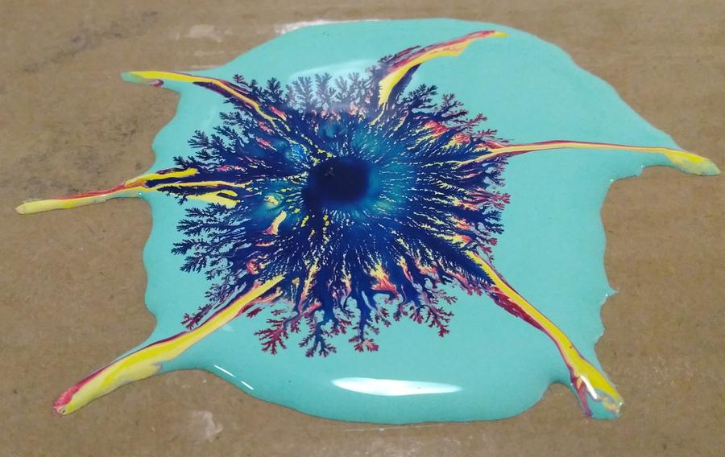
Creating Starfish is fun and exciting. I will be using a spoon, two mixing cups, cardboard, scotch tape, Paiwt....
Read more →
Pouring Color Mixture
Posted by Daniel Bohnett on August 21, 2018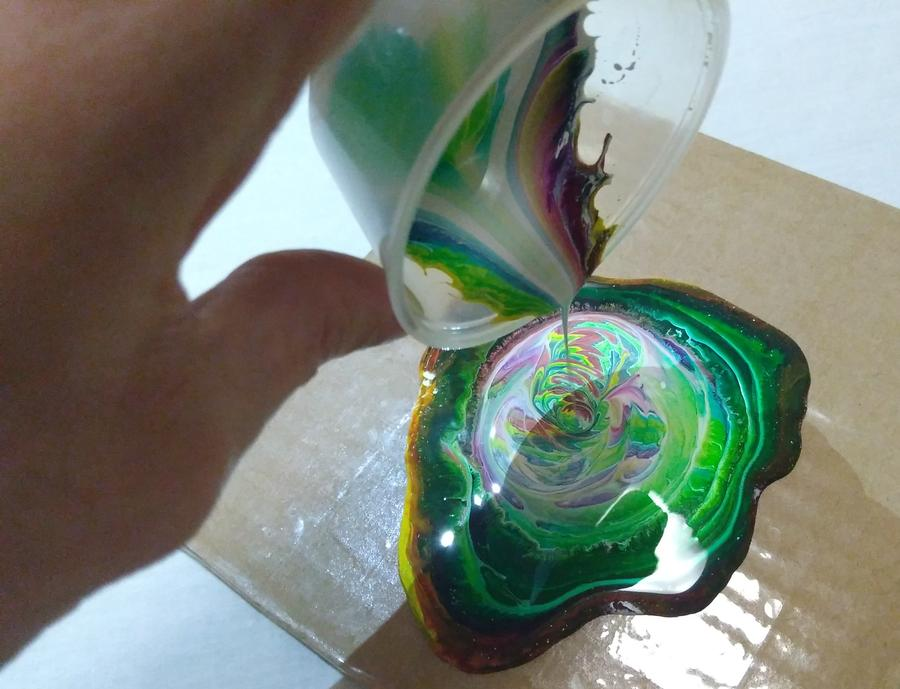
Pouring a mixture of colors and medium creates new designs. I will be using a cup, cardboard, scotch tape,.....
Read more →
Straight Lines & Checkerboards
Posted by Daniel Bohnett on May 18, 2018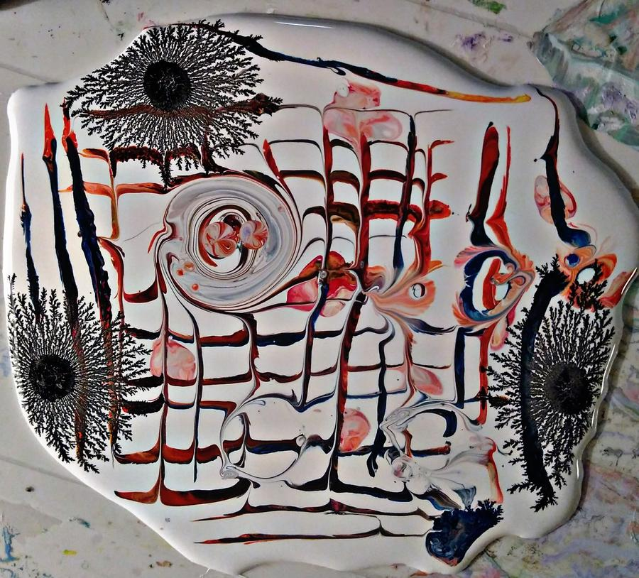
This new technique creates straight lines, checkerboards, and new designs. You will need: a plastic card,.....
Read more →
Cutouts
Posted by Daniel Bohnett on May 13, 2018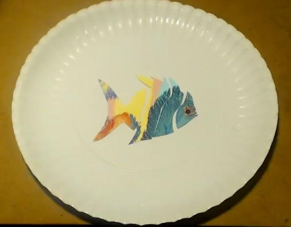
This technique transforms your peel offs into cutout designs. You will need a pair of scissors.....
Read more →
Adding Image Cutouts
Posted by Daniel Bohnett on January 5, 2016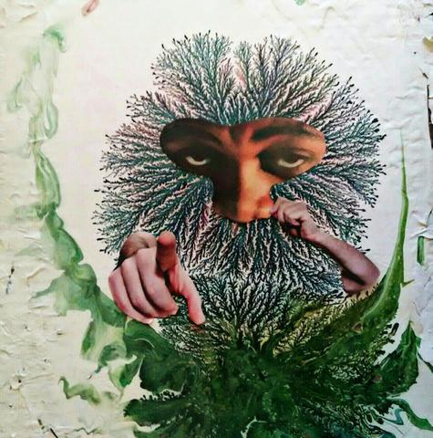
Once your Paiwt painting is dry, you can add picture cutouts, great for making collages. For my project,......
Read more →
"Magic Brush"
Posted by Daniel Bohnett on April 12, 2015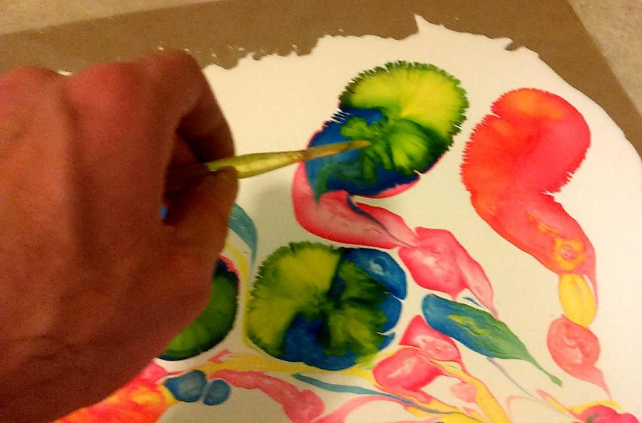
This technique is fun and colorful, I call it "Magic Brush". To create your magic brush, mix equal parts of Paiwt......
Read more →
Adding a Resin Finish
Posted by Daniel Bohnett on April 9, 2015
I recommend adding a clear resin finish to your Paiwt artwork. Here I am using my preferred clear resin,......
Read more →
Using Paint Brushes
Posted by Daniel Bohnett on April 3, 2015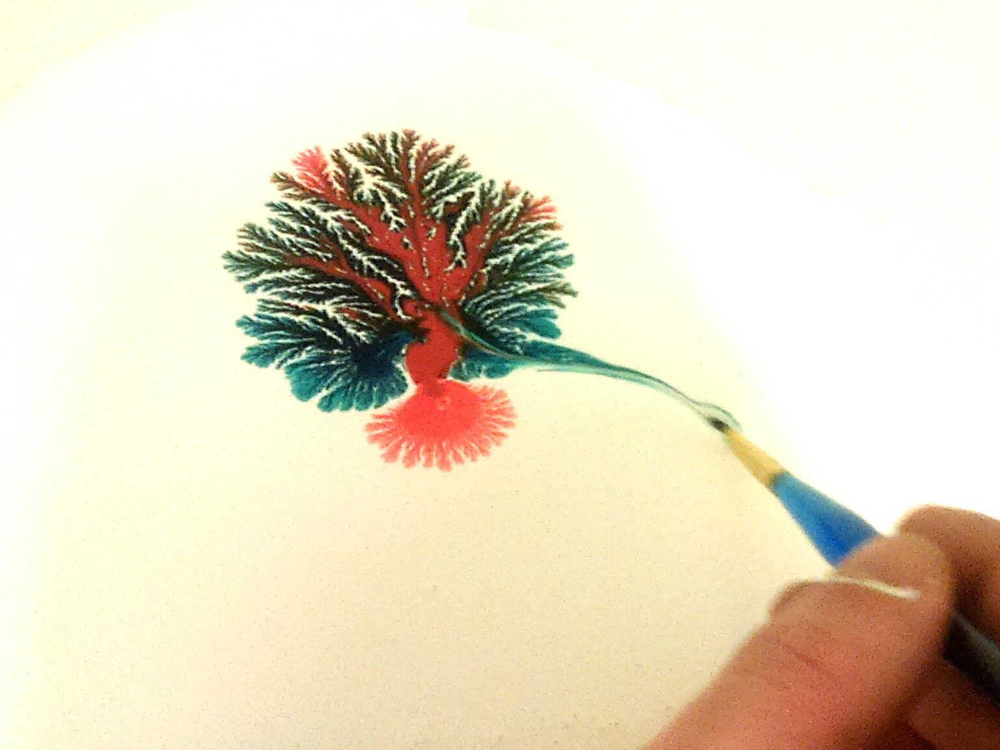
Using paint brushes is an excellent way to create new designs. No Paiwt Expander is needed, but when used it......
Read more →
Pouring Medium Into Colors
Posted by Daniel Bohnett on April 3, 2015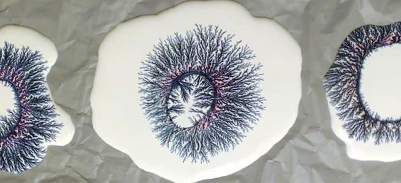
Using paint brushes is an excellent way to create new designs. No Paiwt Expander is needed, but when used it......
Read more →
Peeling Off Plastic
Posted by Daniel Bohnett on November 10, 2014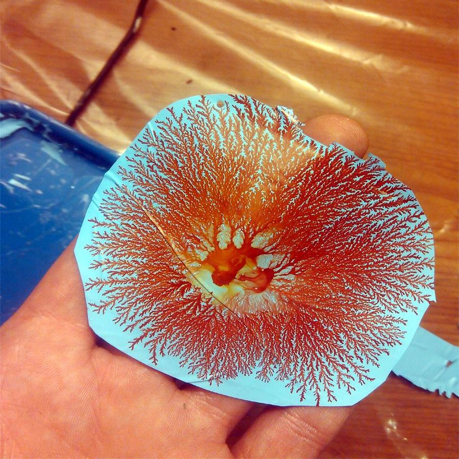
Peeling your finished Paiwt from plastic creates new possibilities for customizing your finished designs. I.....
Read more →
Colorful Medium
Posted by Daniel Bohnett on November 1, 2014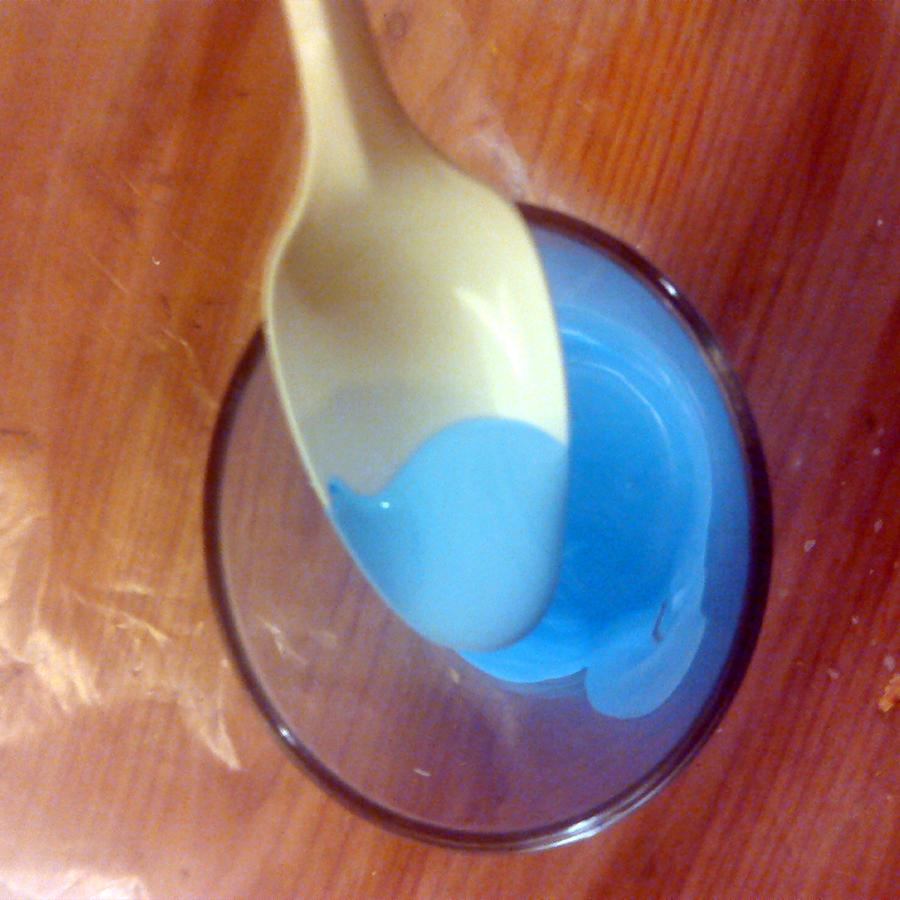
This technique is one of my favorites, it creates a colorful medium by mixing Paiwt Colors with Paiwt.....
Read more →
© Paiwt. All rights reserved.